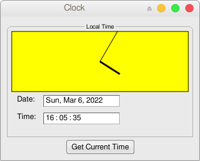

3.2 - Analog Clock#
In this section, you will add an analog clock to your clock application.

In order to do this, you will create a custom view and use NSBezierPath to draw on it.
You can either work on your project folder from the previous section, or copy that folder.
You could also start over – it seems like this guide was meant for starting over.
Custom views#
Gorm can work on custom views, which are designed by the programmer, and not supplied by the Application Kit.
In this section, we’ll start off by adding a custom view:
Figure 4-12. TimeMachine with custom view

Since I want to use the custom view in Gorm, I have to design the class
first. The custom view can inherit from NSView, or NSControl, depending
on what kind of functions you want. Actually, NSControl is a subclass of
NSView. So I will inherit from NSControl. Click on the small circle of
NSResponder to open its subclasses, then do the same thing on NSView and
NSControl. Now, you can see that many GUI components inherit from
NSControl, ex. NSTextField.
Figure 4-13. NSControl in Gorm

Creating a custom view#
I want my custom view, called TimeView, to inherit from NSControl. Choose
NSControl, then select the menu item “Classes→Create Subclass…”.
Double-click to change the name.
Figure 4-14. Add subclass of NSControl

You can notice that class TimeView also inherits 3 outlets and 7
actions from NSControl. Once the class TimeView is created, I can use
it as a custom view.
Build the interface as below:
Figure 4-15. Interface with custom view

Look at the Attributes tab in the inspector for CustomView.
Choose the class TimeView.
Figure 4-16. Change class of custom view

The CustomView becomes TimeView. That’s it !
Figure 4-17. Custom view with TimeView class

As I did before, create another class for the “controller”. Add one
outlet for this TimeView, and one action for the button. Name the
outlet timeView and the action showCurrentTime:.
Figure 4-18. Add outlet

Figure 4-19. Add action

Create an instance of Controller. Connect the button to the
action showCurrentTime:, and the outlet timeView to the custom view
TimeView.
Figure 4-20. Connect outlet


Finally, create the class file for the classes TimeView and
Controller. Save this application as TimeMachine.gorm.
Coding our custom view#
Now, we need to code the class TimeView. The class
TimeView is actually four NSTextFields in an NSBox. The reason that I
made them in one class is because I can reuse it later on. Classes
inherited from NSView will be initialized by calling method
-initWithFrame:. Therefore, I only need to rewrite the method
-initWithFrame: in the class TimeView. Here are the files:
TimeView.h:
#import <AppKit/AppKit.h>
@interface TimeView : NSControl
{
NSTextField *labelDate, *labelTime;
NSTextField *localDate, *localTime;
NSCalendarDate* date;
}
- (NSCalendarDate*) date;
- (void) setDate: (NSCalendarDate*) date;
@end
TimeView.m:
#import <AppKit/AppKit.h>
#import "TimeView.h"
@implementation TimeView
- (id) initWithFrame: (NSRect) frame {
NSBox *box;
self = [super initWithFrame: frame];
box = [[NSBox alloc]
initWithFrame: NSMakeRect(
0, 0, // x=0, y=0
frame.size.width,
frame.size.height
)
];
[box setBorderType: NSGrooveBorder];
[box setTitlePosition: NSAtTop];
[box setTitle: @"Local Time"];
self->labelDate = [[NSTextField alloc]
initWithFrame: NSMakeRect(10, 45, 35, 20)];
// x=10, y=45, width=35, height=20
[self->labelDate setStringValue: @"Date: "];
[self->labelDate setBezeled: NO];
[self->labelDate setBackgroundColor: [NSColor windowBackgroundColor]];
[self->labelDate setEditable: NO];
self->labelTime = [[NSTextField alloc]
initWithFrame: NSMakeRect(10, 15, 35, 20)];
// x=10, y=15, width=35, height=20
[self->labelTime setStringValue: @"Time: "];
[self->labelTime setBezeled: NO];
[self->labelTime setBackgroundColor: [NSColor windowBackgroundColor]];
[self->labelTime setEditable: NO];
self->localDate = [[NSTextField alloc]
initWithFrame: NSMakeRect(55, 45, 130, 20)];
self->localTime = [[NSTextField alloc]
initWithFrame: NSMakeRect(55, 15, 130, 20)];
[box addSubview: self->labelDate];
[box addSubview: self->labelTime];
[box addSubview: self->localDate];
[box addSubview: self->localTime];
[self->labelDate release];
[self->labelTime release];
[self->localDate release];
[self->localTime release];
[self addSubview: box];
[box release];
return self;
}
- (NSCalendarDate *) date {
return self->date;
}
- (void) setDate: (NSCalendarDate *) aDate {
self->date = aDate;
[self->date setCalendarFormat: @"%a, %b %e, %Y"];
[self->localDate setStringValue: [self->date description]];
[self->date setCalendarFormat: @"%H : %M : %S"];
[self->localTime setStringValue: [self->date description]];
}
- (void) dealloc {
[self->date release];
[super dealloc];
}
@end
When Gorm generates the class files, it contains template code in
it. Since we don’t need any of the template code, we can safely remove them. In
TimeView.h, we declare four NSTextFields to add to our view, and one
NSCalendarDate to store the date. We also declare two accessory methods
to set and get the date. In -initWithFrame:, we put four NSTextFields into an NSBox. And since class TimeView is a subclass of
NSView, we add the NSBox as the subview of our TimeView.
Other parts of this application should be very easy. Here are the files:
Controller.h:
#import <AppKit/AppKit.h>
#import "TimeView.h"
@interface Controller : NSObject
{
id timeView;
}
- (void) showCurrentTime: (id)sender;
@end
Controller.m:
#import <AppKit/AppKit.h>
#import "Controller.h"
@implementation Controller
- (void) showCurrentTime: (id)sender {
NSCalendarDate *date = [NSCalendarDate date];
[self->timeView setDate: date];
}
@end
main.m:
#import <AppKit/AppKit.h>
int main(int argc, const char *argv[]) {
return NSApplicationMain (argc, argv);
}
GNUmakefile:
include $(GNUSTEP_MAKEFILES)/common.make
APP_NAME = TimeMachine
TimeMachine_HEADERS = Controller.h TimeView.h
TimeMachine_OBJC_FILES = main.m Controller.m TimeView.m
TimeMachine_RESOURCE_FILES = TimeMachineInfo.plist TimeMachine.gorm
TimeMachine_MAIN_MODEL_FILE = TimeMachine.gorm
include $(GNUSTEP_MAKEFILES)/application.make
You should notice that I didn’t instantiate the class TimeView in
the class Controller because when I add an custom view to the window, it
is instantiated automatically. I only need to specify the class the
custom view should be. On the contrary, I have to instantiate the class
Controller in Gorm because it is not a GUI component. Without
instantiation, I can’t connect the “controller” to the “view”.
If you encounter a compiler error, please see the note below.
Our app right now.#
Drawing on our custom view#
Now, let’s make an analog clock using our custom view:
Custom view with analog clock#
It’s very simple. We only need to add a new GUI component in the class
TimeView. We’ll call this new class ClockView. Since ClockView will be
a subview of TimeView, when TimeView is updated, we also need to
update the ClockView.
ClockView.h:
#import <AppKit/AppKit.h>
#import <math.h>
@interface ClockView : NSView
{
NSPoint posHour, posMinute;
}
- (void) setDate: (NSCalendarDate *) aDate;
@end
ClockView.m:
#import "ClockView.h"
@implementation ClockView
- (id) init {
self = [super init];
self->posHour = NSMakePoint(0,0);
self->posMinute = NSMakePoint(0,0);
return self;
}
- (void) drawRect: (NSRect) frame {
NSPoint origin = NSMakePoint(frame.size.width/2, frame.size.height/2);
NSBezierPath* BP = [NSBezierPath bezierPathWithRect: [self bounds]];
[[NSColor yellowColor] set];
[BP fill];
BP = [NSBezierPath bezierPathWithRect: NSMakeRect(1, 1,
frame.size.width-2,
frame.size.height-2)];
[[NSColor blackColor] set];
[BP stroke];
BP = [NSBezierPath bezierPath];
[BP setLineWidth: 3];
[BP moveToPoint: origin];
[BP relativeLineToPoint: self->posHour];
[BP stroke];
[BP setLineWidth: 1];
[BP moveToPoint: origin];
[BP relativeLineToPoint: self->posMinute];
[BP stroke];
}
- (void) setDate: (NSCalendarDate *) date {
int hour = [date hourOfDay];
int minute = [date minuteOfHour];
float hour_x = 40*sin((M_PI*hour/6)+(M_PI*minute/360));
float hour_y = 40*cos((M_PI*hour/6)+(M_PI*minute/360));
float minute_x = 60*sin(M_PI*minute/30);
float minute_y = 60*cos(M_PI*minute/30);
self->posHour = NSMakePoint(hour_x, hour_y);
self->posMinute = NSMakePoint(minute_x, minute_y);
[self setNeedsDisplay: YES];
}
@end
ClockView inherits from NSView. The most important method it should
override is -drawRect:. When this view need to update, -drawRect: will
be called. Therefore, I put all the drawing in this method. NSBezierPath
is how GNUstep draws. I assign the path, set the color, then draw. There
is a good article about drawing: Introduction to Cocoa Graphics, Part
I, Part
II.
Exercise
A bit of code is needed to include ClockView in TimeView. One is to add
ClockView as a subview of NSBox in TimeView. Another is to update
ClockView when TimeView is update. In method -setDate: of ClockView, it
uses [self setNeedsDisplay: YES] to make this view update. This
modification is easy to do. You can play around it.
If you don’t want to do this exercise, you can see the modifications below.
Adding the analog clock to our custom view#
TimeView.h:
#import <AppKit/AppKit.h>
#import "ClockView.h"
@interface TimeView : NSControl
{
NSTextField *labelDate, *labelTime;
NSTextField *localDate, *localTime;
NSCalendarDate* date;
ClockView* clockView;
}
- (NSCalendarDate*) date;
- (void) setDate: (NSCalendarDate*) date;
@end
TimeView.m:
#import <AppKit/AppKit.h>
#import "TimeView.h"
@implementation TimeView
- (id) initWithFrame: (NSRect) frame {
NSBox *box;
self = [super initWithFrame: frame];
box = [[NSBox alloc]
initWithFrame: NSMakeRect(
0, 0, // x=0, y=0
frame.size.width,
frame.size.height
)
];
[box setBorderType: NSGrooveBorder];
[box setTitlePosition: NSAtTop];
[box setTitle: @"Local Time"];
self->clockView = [[ClockView alloc]
initWithFrame: NSMakeRect(
0, 70, // x=0, y=70
frame.size.width,
frame.size.height
)
];
self->labelDate = [[NSTextField alloc]
initWithFrame: NSMakeRect(10, 45, 35, 20)];
// x=10, y=45, width=35, height=20
[self->labelDate setStringValue: @"Date: "];
[self->labelDate setBezeled: NO];
[self->labelDate setBackgroundColor: [NSColor windowBackgroundColor]];
[self->labelDate setEditable: NO];
self->labelTime = [[NSTextField alloc]
initWithFrame: NSMakeRect(10, 15, 35, 20)];
// x=10, y=15, width=35, height=20
[self->labelTime setStringValue: @"Time: "];
[self->labelTime setBezeled: NO];
[self->labelTime setBackgroundColor: [NSColor windowBackgroundColor]];
[self->labelTime setEditable: NO];
self->localDate = [[NSTextField alloc]
initWithFrame: NSMakeRect(55, 45, 130, 20)];
self->localTime = [[NSTextField alloc]
initWithFrame: NSMakeRect(55, 15, 130, 20)];
[box addSubview: self->clockView];
[box addSubview: self->labelDate];
[box addSubview: self->labelTime];
[box addSubview: self->localDate];
[box addSubview: self->localTime];
[self->clockView release];
[self->labelDate release];
[self->labelTime release];
[self->localDate release];
[self->localTime release];
[self addSubview: box];
[box release];
return self;
}
- (NSCalendarDate *) date {
return self->date;
}
- (void) setDate: (NSCalendarDate *) aDate {
self->date = aDate;
[self->date setCalendarFormat: @"%a, %b %e, %Y"];
[self->localDate setStringValue: [self->date description]];
[self->date setCalendarFormat: @"%H : %M : %S"];
[self->localTime setStringValue: [self->date description]];
[self->clockView setDate: self->date];
}
- (void) dealloc {
[self->date release];
[super dealloc];
}
@end
GNUmakefile:
include $(GNUSTEP_MAKEFILES)/common.make
APP_NAME = TimeMachine
TimeMachine_HEADERS = Controller.h TimeView.h ClockView.h
TimeMachine_OBJC_FILES = main.m Controller.m TimeView.m ClockView.m
TimeMachine_RESOURCE_FILES = TimeMachineInfo.plist TimeMachine.gorm
TimeMachine_MAIN_MODEL_FILE = TimeMachine.gorm
# Uncomment below if you get a compiler error about "undefined symbol: _Z15_Unwind_VRS_Set..."
ADDITIONAL_LDFLAGS += -lgcc_s
include $(GNUSTEP_MAKEFILES)/application.make
Our app right now.#
Building our app#
Note#
After compiling, I got the following error:
/home/pi/Projects/GNUstep/GSTutorial/3.1_TimeMachine/TimeMachine.app/TimeMachine: symbol lookup error: /usr/local/lib/libobjc.so.4.6: undefined symbol: _Z15_Unwind_VRS_SetP15_Unwind_Context20_Unwind_VRS_RegClassj30_Unwind_VRS_DataRepresentationPv
which is complaining that the function
_Unwind_VRS_Set(_Unwind_Context*, _Unwind_VRS_RegClass, unsigned int, _Unwind_VRS_DataRepresentation, void*)
was not found.
You can work around this by adding
ADDITIONAL_LDFLAGS += -lgcc_s # Link to GCC C runtime
# or
ADDITIONAL_LDFLAGS += -lstdc++ # Link to GCC C++ standard library
# or
ADDITIONAL_LDFLAGS += -lc++ # Link to Clang C++ standard library
to your GNUmakefile, before the include $(GNUSTEP_MAKEFILES)/application.make.